Sustainability Planning
Comprehensive Community Planning
Encompassing community and sustainability planning I researched, analyzed, and wrote a comprehensive community plan report in a team of 5 on a site near the City of Vancouver's Cambie Corridor project.
Part 1: Context
Comprehensive Planning For a Sustainable Future
The Sexsmith Site Community plan is made to enhance the community of Marpole east of Cambie establishing a framework of actions and policies in line with the city's objectives tackling physical, cultural, and social aspects of the area it is located in. Within are considerations for site history, physical constraints, neighbourhood characteristics, and the site's relationship with the rest of the community it connects to and beyond.
My Role:
Planner, Research, Overall Document Design, Group Leader, Scheduler, Chart Maker
Tools: Pen and paper, Adobe Illustrator, City of Vancouver Policies and Documents, Physical Site Visits, Microsoft Excel
Part 2: Process
Focus: Site, Policy & Engagement
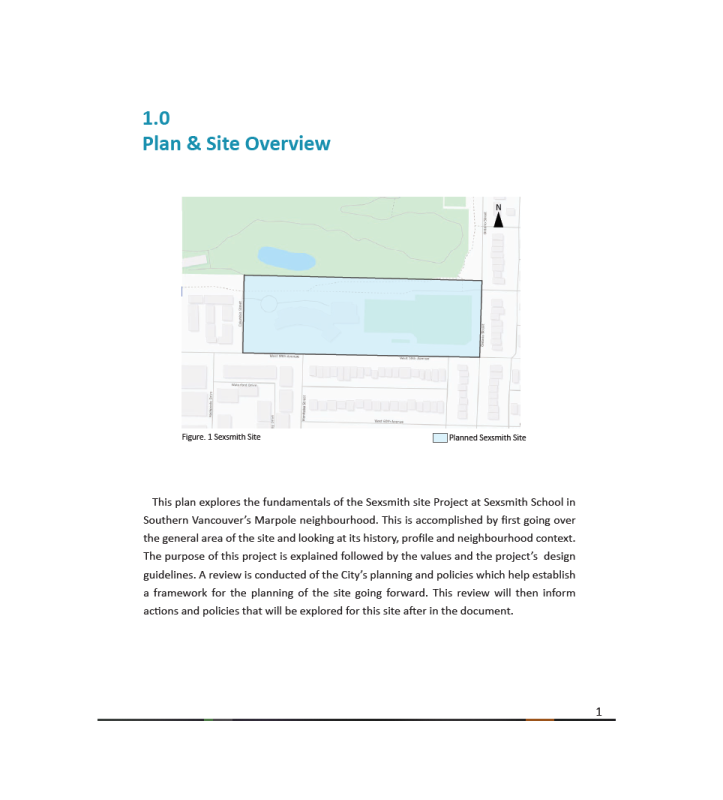{kind=link}
At the start of the project was the need to research just what the site is and how it relates to the City of Vancouver. While working with scheduling as team leader, I researched and analyzed information to express sustainable actions while contributing to the community.
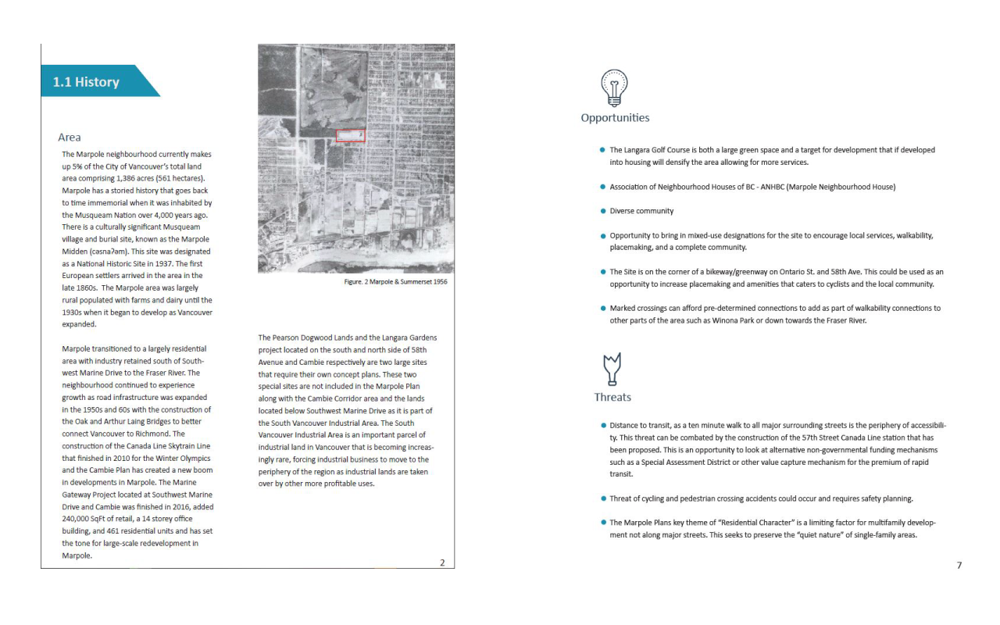{kind=link}
Before being able to recommend actions for the proposed site planning, however, I took to review official community plans and strategies related with my team. Referencing it with the area's history, I narrowed down what should the site focus on as a community for the future on their strengths and weaknesses.
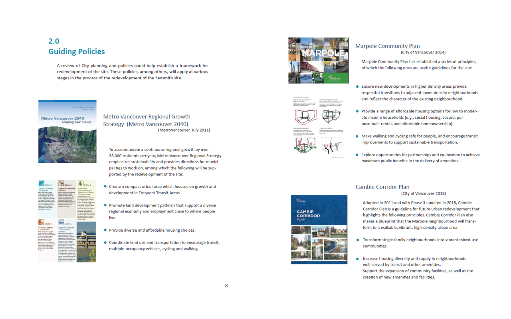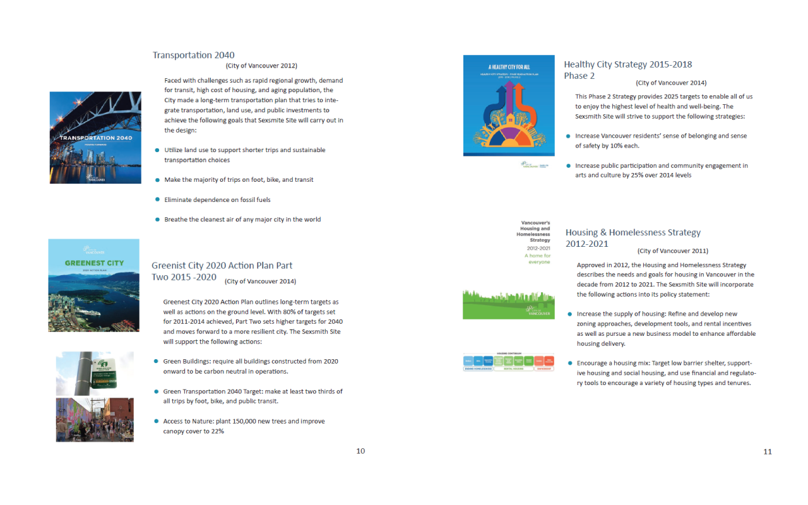{kind=link}
{kind=link}
Policies reviewed included from regional to city down to Marpole as a community and aspects such as transportation and housing strategies. These would become the foundation on how I would base the actions and planning with understanding of the site and the desires of the City of Vancouver.
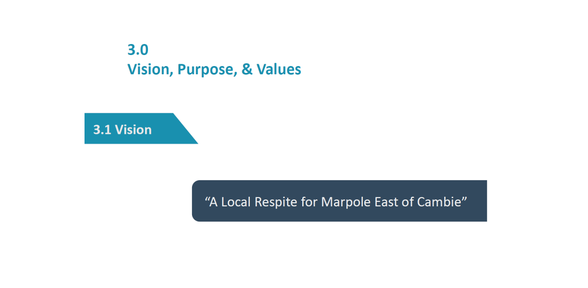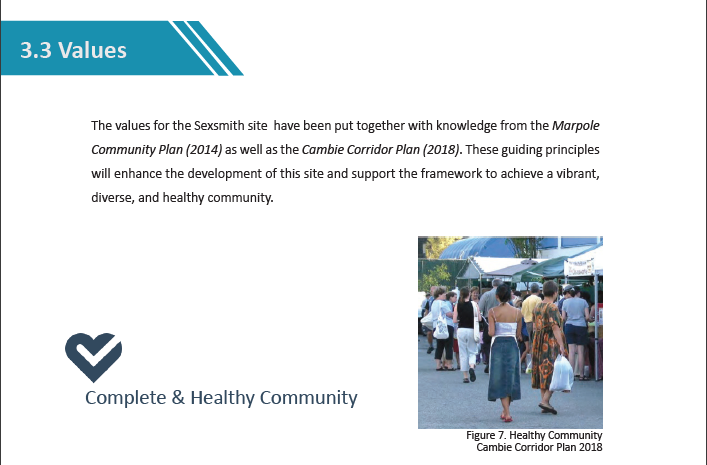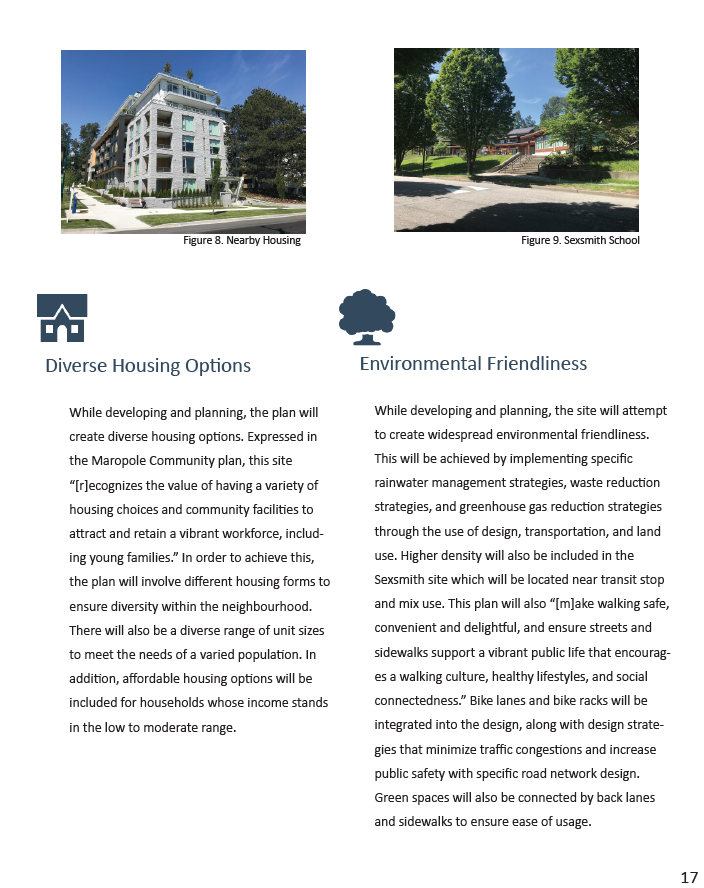{kind=link}
{kind=link}
{kind=link}
Processing down the information I then concluded the site's vision and purpose as a unique part of the community of Marpole while balancing the harmony with neighbouring areas such as the business heavy Cambie Corridor.
Several values are then highlighted for the future site focusing on 5 in particular: Complete & Healthy Community, Diverse Housing, Environmental Concerns, Culture, and Historic importance. These will shape what actions the site will be planned.
{kind=link}
As part of the planning process and actions, an engagement strategy was made to line up the plan with public engagement. This allows the plan to be modified as feedback is gained and iterated upon.
Focus: "Complete Block" & Actions
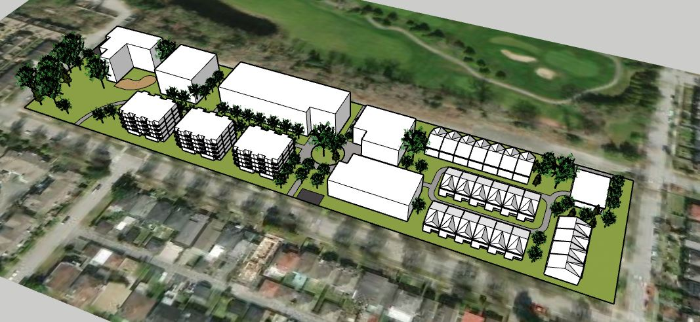{kind=link}
After research and analysis on the site and policy related, I translated the information into actions and recommendations as comprehensive planning and build form. One idea to note was the decision to create a "complete block" as part of the community. This distinction fits the idea to give identity to the site and comprehensive sustainable land-use planning for the community east of Marpole it would serve.
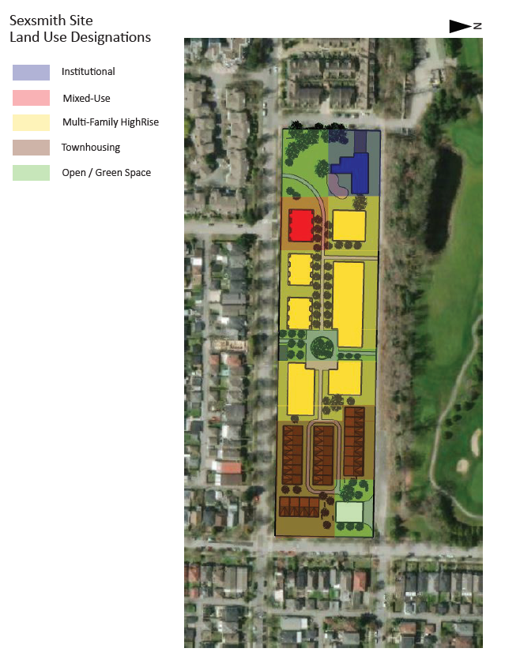{kind=link}
As part of planning the report looked at development, real estate patterns, the public realm and other elements that all worked together to create a "complete block". It would incorporate them into charts and plans laid out to view and consider. The focus will work towards a block that, when built, ensures various housing, mixed-use, and open area options following a good base.
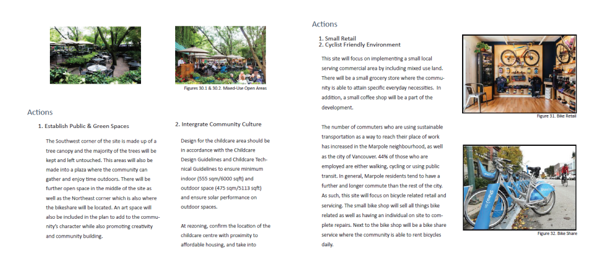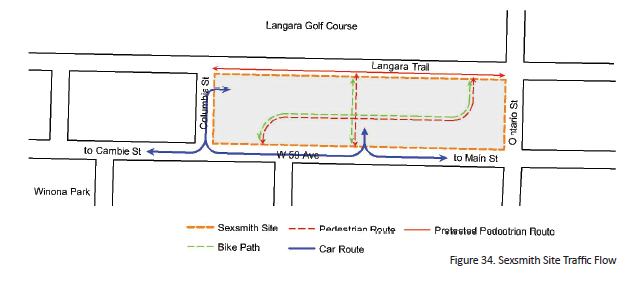{kind=link}
{kind=link}
The portion I contributed as the primary planner was the public realm and transportation network portions of the report. I concluded that the site would serve as a perfect linkage for Marpole in terms of north and south cycling routes to west and east while keeping the local capacity of traffic and how it would affect the neighbourhood.
The public realm will work towards the site's strengths: community care and bringing the site's history into focus while creating areas for rest and relaxation. Community amenities are to bolster the need for family necessities, recreation, and child-care; a large point to make as surrounding neighbourhoods have heavier retail and traffic compared to the site itself.
Part 3: Implementation & Report Writing
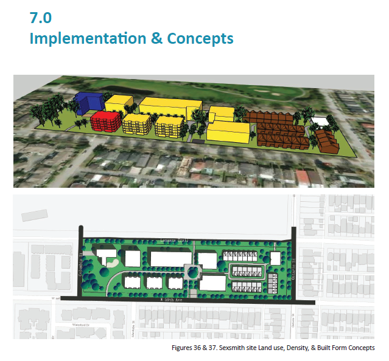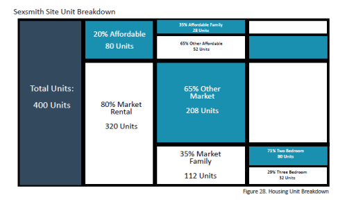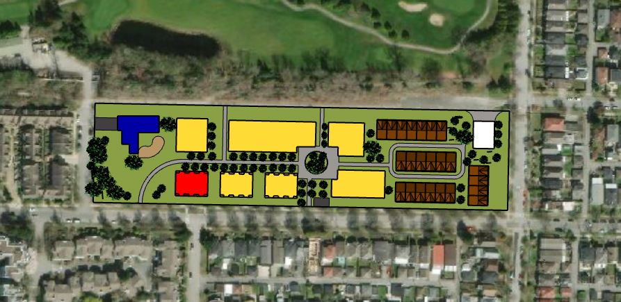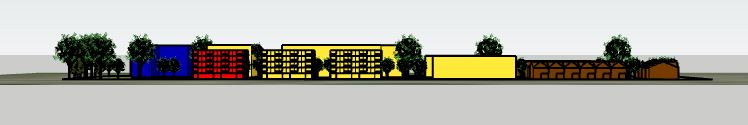{kind=link}
{kind=link}
{kind=link}
{kind=link}
Report Written and Designed Ready for Consideration
The document is designed to accommodate fast view and show rather than tell. It gives good narrative for the site's design and plan as readers will understand why each facet is planned. Implementation and actions shown through were made in adobe illustrator, AutoCAD, Excel, and SketchUp.
Throughout this report I used my skills in planning, graphical design, and team leadership. I strengthened my skills and familiarity of planning policies as it applied to various research and higher thinking exercises. The project itself needed a schedule and management to keep it on track and I believe I had done well in creating a report that is both full of effective information and pleasing to read in.